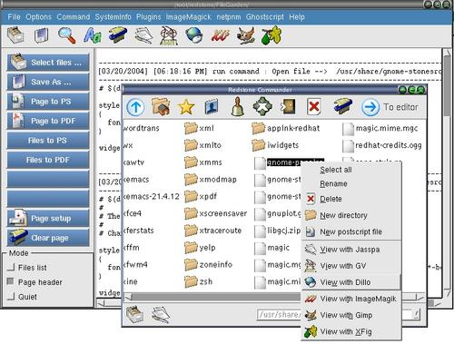

To use the built in file commander --> xfgcommander

Step 1 : The xfgcommander will be loaded everytime you run FileGarden.
Step 2 : By clicking the "Show files" button will show the hiddened xfgcommander.
Step 3 : Right click on xfgcommander will popup a popup-menu for basic playing
of the filesystem and current directory.
Step 4 : The current directory of the xfgcommander is the current
directory of the saving location for all files saved.They will be highlighted
after you close a dialog or executed a menu command.
Step 5 : There are hints for help or infomation when you pause on a button or a file.
Step 6 : You cannot close the xfgcommander.
Step 7 : The functionings of the xfgcommander is relative to the settings from
the FileGarden main program.Specifically those checked boxes.
note : The current directory of the xfgcommander is the current
directory of the saving location for all files saved.They will be highlighted
after you close a dialog or executed a menu command.